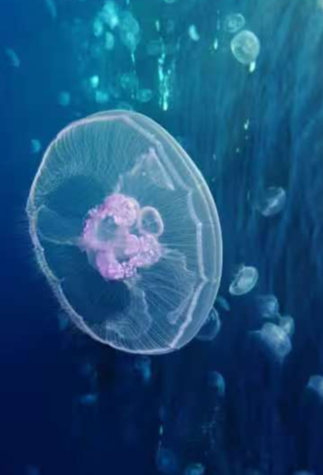
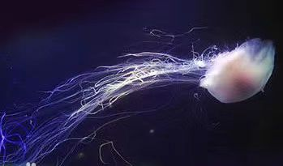

潜入深海 水母王国
探索深海中会发光的精灵

海月水母
海月水母的外形极具辨识度，它们的身体呈圆盘状，通体透明，直径通常在 25 - 40 厘米之间 ，最大个体甚至可达 50 厘米。从侧面看去，宛如一轮散发着柔和光芒的明月漂浮在海中，"海月水母" 之名也由此而来。

霞水母
霞水母的外形极为壮观，是世界上体型最大的水母之一。其伞状体直径通常可达 2 米，最大甚至超过 2.5 米，宛如一个巨大的、半透明的圆盘漂浮在海水中 。它们的伞状体颜色丰富多变，"霞水母" 之名也因此得来。